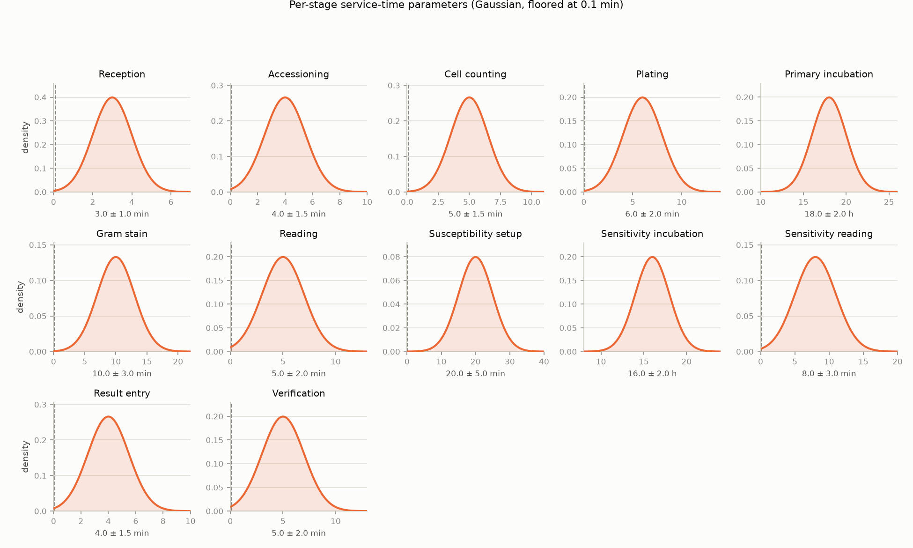

100 independent replications of this config, varying only random_seed. The interval is the empirical 2.5th-97.5th percentile across replications, not a Bayesian credible interval.
| Metric | Mean | 95% interval |
|---|---|---|
| Samples arrived | 6364.1 | [6037.4, 6652.1] |
| Samples completed | 3216.7 | [3097.9, 3358.8] |
| Samples rejected | 161.8 | [128.4, 202.0] |
| Samples positive | 554.6 | [511.9, 592.5] |
| Mean turnaround (h) | 87.0 | [83.1, 90.7] |
| Max turnaround (h) | 192.6 | [173.1, 223.3] |
| Min turnaround (h) | 36.3 | [34.4, 38.0] |
| Arrivals during warm-up | 2995.6 | [2787.2, 3222.3] |
| Completions during warm-up | 903.8 | [839.0, 973.0] |
Mean total time a completed sample spent waiting for a resource (HSSW, BMS, clinical microbiologist, plate/blood-culture incubator slot, or identification analyzer) across its whole journey, summed over every stage - see lab_sim/v3/stats.py's QUEUE_STAGES. Mean and 95% interval are across 100 independent replications (same method as the Replication analysis section above); a dash means no replication saw a completed sample of that type. Window-length-dependent: if staffing is in sustained overload at this config (check whether "samples completed" above is well below "samples arrived"), the queue backlog grows across the run rather than stabilizing, so this is "mean wait among samples completing within this observation window," not a converged steady-state figure - it will grow if the window is widened. Blood culture is also structurally different from every other type here: its primary incubation draws on the dedicated, uncontended blood-culture incubator pool rather than the overloaded staff pools, and a non-flagging bottle skips plating/susceptibility entirely.
| Specimen type | Mean completions / replication | Mean queue wait | 95% interval |
|---|---|---|---|
| Blood Culture | 280.7 | 24.0 h | [21.4 h, 27.1 h] |
| Tissue | 23.9 | 71.1 h | [56.9 h, 85.3 h] |
| Urine | 263.7 | 66.0 h | [58.6 h, 73.4 h] |
| Swab | 1214.6 | 61.6 h | [57.3 h, 65.9 h] |
| Stool | 218.5 | 58.3 h | [51.7 h, 64.5 h] |
| Sputum | 158.5 | 62.7 h | [54.9 h, 71.9 h] |
| Multi Site | 858.9 | 54.1 h | [50.6 h, 58.2 h] |
| Nail | 42.6 | 63.8 h | [52.9 h, 76.0 h] |
| Body Fluid | 18.2 | 68.6 h | [53.5 h, 82.8 h] |
| Breast Milk | 39.2 | 57.8 h | [50.2 h, 67.2 h] |
| Broncho Alveolar Lavage | 12.8 | 72.6 h | [57.4 h, 90.6 h] |
| Environmental | 31.2 | 81.4 h | [67.1 h, 95.4 h] |
| Stem Cells | 25.4 | 60.5 h | [50.9 h, 71.4 h] |
| Drain Tube Other Device | 5.9 | 67.4 h | [40.8 h, 104.7 h] |
| Fluid | 5.0 | 69.2 h | [43.7 h, 105.9 h] |
| Post Mortem Swab | 4.4 | 70.0 h | [39.7 h, 102.2 h] |
| Cerebrospinal Fluid | 3.0 | 73.4 h | [33.2 h, 114.4 h] |
| Synovial Fluid | 4.1 | 58.7 h | [34.8 h, 83.6 h] |
| Hair | 3.2 | 50.3 h | [29.7 h, 70.9 h] |
| Other | 2.9 | 67.6 h | [31.7 h, 113.9 h] |
| All samples | 3216.7 | 56.9 h | [52.9 h, 61.3 h] |
Arrived and Completed are independent cohorts - a sample can complete in the observation window without having arrived in it (it arrived during warm-up), or vice versa (it's still mid-pipeline at run end).
| Specimen type | Arrived | Completed | Positive | Negative | % positive |
|---|---|---|---|---|---|
| Blood Culture | 691 | 330 | 3 | 327 | 1% |
| Tissue | 62 | 23 | 18 | 5 | 78% |
| Urine | 908 | 255 | 106 | 149 | 42% |
| Swab | 2239 | 1194 | 269 | 925 | 23% |
| Stool | 353 | 218 | 5 | 213 | 2% |
| Sputum | 375 | 180 | 41 | 139 | 23% |
| Multi Site | 1410 | 860 | 11 | 849 | 1% |
| Nail | 93 | 43 | 21 | 22 | 49% |
| Body Fluid | 48 | 15 | 8 | 7 | 53% |
| Breast Milk | 67 | 40 | 2 | 38 | 5% |
| Broncho Alveolar Lavage | 31 | 17 | 9 | 8 | 53% |
| Environmental | 74 | 33 | 33 | 0 | 100% |
| Stem Cells | 26 | 19 | 0 | 19 | 0% |
| Drain Tube Other Device | 18 | 5 | 3 | 2 | 60% |
| Fluid | 11 | 8 | 4 | 4 | 50% |
| Post Mortem Swab | 11 | 3 | 3 | 0 | 100% |
| Cerebrospinal Fluid | 10 | 8 | 5 | 3 | 62% |
| Synovial Fluid | 10 | 4 | 0 | 4 | 0% |
| Hair | 5 | 2 | 0 | 2 | 0% |
| Other | 10 | 1 | 1 | 0 | 100% |
One patient per arrived sample (see Background/v3/Microbiology Context); age bands use the thresholds that modulate positivity (config.young_age_threshold / elderly_age_threshold).
| Gender | Patients | % |
|---|---|---|
| Female | 3377 | 52% |
| Male | 3075 | 48% |
| Age | Years |
|---|---|
| Mean | 54 |
| Median | 55 |
| Min | 0 |
| Max | 100 |
| Age band | Patients | % |
|---|---|---|
| Young (≤ 5) | 73 | 1% |
| Adult | 4378 | 68% |
| Elderly (≥ 65) | 2001 | 31% |
| Specimen type | Completed | Mean turnaround | Min turnaround | Max turnaround |
|---|---|---|---|---|
| Blood Culture | 330 | 142.1 h | 119.3 h | 165.8 h |
| Tissue | 23 | 98.5 h | 40.8 h | 144.3 h |
| Urine | 255 | 86.1 h | 38.1 h | 170.3 h |
| Swab | 1194 | 81.3 h | 36.0 h | 168.4 h |
| Stool | 218 | 77.0 h | 36.7 h | 128.1 h |
| Sputum | 180 | 85.8 h | 36.8 h | 166.1 h |
| Multi Site | 860 | 67.7 h | 36.2 h | 154.9 h |
| Nail | 43 | 86.4 h | 40.8 h | 143.7 h |
| Body Fluid | 15 | 97.3 h | 39.6 h | 169.7 h |
| Breast Milk | 40 | 80.4 h | 39.7 h | 107.0 h |
| Broncho Alveolar Lavage | 17 | 86.3 h | 36.1 h | 153.9 h |
| Environmental | 33 | 110.5 h | 60.8 h | 162.3 h |
| Stem Cells | 19 | 74.5 h | 40.5 h | 101.9 h |
| Drain Tube Other Device | 5 | 73.8 h | 39.7 h | 102.5 h |
| Fluid | 8 | 89.6 h | 40.1 h | 160.4 h |
| Post Mortem Swab | 3 | 91.6 h | 73.6 h | 117.6 h |
| Cerebrospinal Fluid | 8 | 126.7 h | 59.4 h | 169.5 h |
| Synovial Fluid | 4 | 82.6 h | 58.3 h | 99.6 h |
| Hair | 2 | 56.6 h | 44.4 h | 68.8 h |
| Other | 1 | 70.3 h | 70.3 h | 70.3 h |
Median is shown alongside the mean as a check: turnaround is a sum of mostly-Gaussian stage durations, so absent heavy queueing it should be roughly symmetric and the two should track each other. If they diverge noticeably, the mean is being pulled by a skewed tail (e.g. queueing delay) and the median is the more representative figure.
| Culture result | Completed | Mean turnaround | Median turnaround | Min turnaround | Max turnaround |
|---|---|---|---|---|---|
| Culture positive | 542 | 114.1 h | 117.6 h | 60.8 h | 170.3 h |
| Culture negative | 2716 | 79.0 h | 76.6 h | 36.0 h | 165.8 h |
Susceptibility-related phases only apply to positive samples; a dash means no completed sample of that type reached that phase.
| Specimen type | Reception | Accessioning | Cell counting | Plating | Primary incubation | Gram stain | Post-flag plate incubation | Reading | Susceptibility setup | Sensitivity incubation | Sensitivity reading | Result entry | Verification |
|---|---|---|---|---|---|---|---|---|---|---|---|---|---|
| Blood Culture | 3.1 min | 4.0 min | — | 5.3 min | 119.1 h | 12.3 min | 19.6 h | 5.2 min | 24.3 min | 15.5 h | 8.3 min | 4.1 min | 5.0 min |
| Tissue | 3.0 min | 3.8 min | — | 5.7 min | 16.9 h | — | — | 5.5 min | 20.7 min | 16.1 h | 7.6 min | 3.8 min | 5.9 min |
| Urine | 3.0 min | 4.0 min | 5.1 min | 6.2 min | 18.2 h | — | — | 4.9 min | 20.1 min | 15.6 h | 7.8 min | 3.9 min | 4.8 min |
| Swab | 3.0 min | 4.0 min | — | 5.9 min | 18.0 h | — | — | 4.8 min | 19.9 min | 16.3 h | 8.1 min | 4.0 min | 5.0 min |
| Stool | 2.9 min | 4.1 min | — | 6.1 min | 17.8 h | — | — | 5.2 min | 19.3 min | 14.4 h | 9.1 min | 4.1 min | 4.9 min |
| Sputum | 2.9 min | 4.1 min | — | 6.0 min | 18.1 h | — | — | 4.9 min | 20.5 min | 15.6 h | 8.0 min | 4.0 min | 5.2 min |
| Multi Site | 3.0 min | 4.0 min | — | 6.1 min | 18.1 h | — | — | 5.0 min | 21.8 min | 16.1 h | 7.5 min | 4.0 min | 4.9 min |
| Nail | 2.9 min | 4.2 min | — | 6.1 min | 18.1 h | — | — | 5.2 min | 21.4 min | 15.2 h | 7.1 min | 4.4 min | 5.4 min |
| Body Fluid | 3.1 min | 4.1 min | — | 5.9 min | 19.0 h | — | — | 3.7 min | 18.4 min | 16.6 h | 8.7 min | 3.9 min | 5.1 min |
| Breast Milk | 3.1 min | 4.0 min | — | 5.4 min | 17.7 h | — | — | 4.9 min | 24.9 min | 14.2 h | 7.8 min | 3.9 min | 4.9 min |
| Broncho Alveolar Lavage | 3.3 min | 4.5 min | — | 5.6 min | 17.8 h | — | — | 5.4 min | 22.2 min | 16.7 h | 10.2 min | 4.2 min | 5.0 min |
| Environmental | 2.8 min | 3.6 min | — | 6.5 min | 17.2 h | — | — | 4.6 min | 21.1 min | 15.5 h | 8.4 min | 4.6 min | 5.8 min |
| Stem Cells | 3.2 min | 4.0 min | — | 6.1 min | 17.5 h | — | — | 5.5 min | — | — | — | 4.6 min | 4.6 min |
| Drain Tube Other Device | 2.7 min | 4.6 min | — | 5.5 min | 16.4 h | — | — | 2.8 min | 21.6 min | 15.1 h | 8.3 min | 4.5 min | 5.0 min |
| Fluid | 3.3 min | 3.6 min | — | 5.2 min | 17.5 h | — | — | 6.3 min | 18.6 min | 16.7 h | 7.4 min | 4.5 min | 5.2 min |
| Post Mortem Swab | 3.0 min | 4.6 min | — | 4.6 min | 16.5 h | — | — | 4.4 min | 19.7 min | 17.2 h | 6.6 min | 2.7 min | 6.3 min |
| Cerebrospinal Fluid | 2.6 min | 3.5 min | — | 5.3 min | 18.8 h | — | — | 5.7 min | 16.8 min | 16.4 h | 7.3 min | 4.5 min | 4.8 min |
| Synovial Fluid | 3.8 min | 3.9 min | — | 7.1 min | 16.5 h | — | — | 5.2 min | — | — | — | 4.1 min | 4.4 min |
| Hair | 2.5 min | 1.6 min | — | 5.3 min | 18.2 h | — | — | 6.6 min | — | — | — | 5.0 min | 5.4 min |
| Other | 2.4 min | 3.9 min | — | 6.5 min | 22.3 h | — | — | 2.1 min | 12.4 min | 15.9 h | 15.2 min | 4.0 min | 6.1 min |
Pooled across all specimen types. Negative samples never reach the susceptibility-related phases, so those are shown as a dash.
| Culture result | Reception | Accessioning | Cell counting | Plating | Primary incubation | Gram stain | Post-flag plate incubation | Reading | Susceptibility setup | Sensitivity incubation | Sensitivity reading | Result entry | Verification |
|---|---|---|---|---|---|---|---|---|---|---|---|---|---|
| Culture positive (542) | 3.0 min | 4.0 min | 5.0 min | 6.1 min | 18.0 h | 12.3 min | 19.6 h | 4.8 min | 20.2 min | 16.0 h | 8.0 min | 4.1 min | 4.9 min |
| Culture negative (2716) | 3.0 min | 4.0 min | 5.3 min | 6.0 min | 30.3 h | — | — | 5.0 min | — | — | — | 4.0 min | 5.0 min |
The parameters behind every phase-duration figure above: each stage's duration is drawn independently from a Gaussian (random.gauss(mean, stdev), floored at 0.1 minutes in processes.py's _duration), the same for every sample type and culture outcome. Configured in SimulationConfig (config.py).
| Stage | Mean | Stdev | % of draws below the 0.1 min floor |
|---|---|---|---|
| Reception | 3.0 min | 1.0 min | 0.19% |
| Accessioning | 4.0 min | 1.5 min | 0.47% |
| Cell counting | 5.0 min | 1.5 min | 0.05% |
| Plating | 6.0 min | 2.0 min | 0.16% |
| Primary incubation | 18.0 h | 2.0 h | ~0% |
| Gram stain | 10.0 min | 3.0 min | 0.05% |
| Reading | 5.0 min | 2.0 min | 0.71% |
| Susceptibility setup | 20.0 min | 5.0 min | ~0% |
| Sensitivity incubation | 16.0 h | 2.0 h | ~0% |
| Sensitivity reading | 8.0 min | 3.0 min | 0.42% |
| Result entry | 4.0 min | 1.5 min | 0.47% |
| Verification | 5.0 min | 2.0 min | 0.71% |
